COST-001 · Main au doigt levé 2 photo(s) · Références : REF-1-001, REF-2-040 Même costume : vues différentes REF-1-001 Main au doigt levé — vue 01 246×509 · Image suggérée comme représentation principale (dimensions) 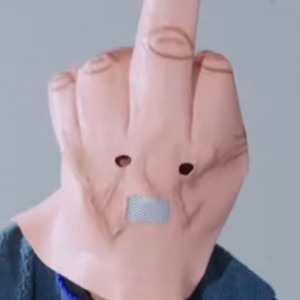
REF-2-040 Main au doigt levé — vue 02 300×300 · Autre prise de vue Rapprochement visuel proposé, photos à comparer côte à côte.
Décision : À examiner 1 carte, choisir une image Conserver plusieurs variantes Séparer en costumes distincts Écarter du set
COST-002 · Serre-tête girafe 3 photo(s) · Références : REF-1-002, REF-2-041, REF-3-007 Même costume : vues différentes REF-1-002 Serre-tête girafe — vue 01 300×511 · Image suggérée comme représentation principale (dimensions) REF-2-041 Serre-tête girafe — vue 02 300×300 · Autre prise de vue REF-3-007 Serre-tête girafe — vue 03 300×283 · Autre prise de vue Rapprochement visuel proposé, photos à comparer côte à côte.
Décision : À examiner 1 carte, choisir une image Conserver plusieurs variantes Séparer en costumes distincts Écarter du set
COST-003 · Clown masqué rose 3 photo(s) · Références : REF-1-003, REF-2-042, REF-3-043 Même costume : vues différentes 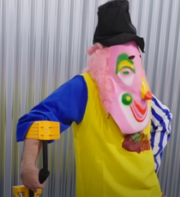
REF-1-003 Clown masqué rose — vue 01 300×328 · Image suggérée comme représentation principale (dimensions) 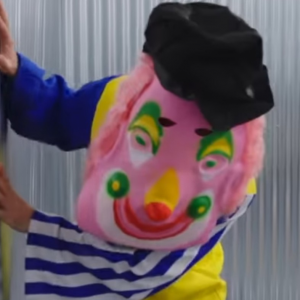
REF-2-042 Clown masqué rose — vue 02 300×300 · Autre prise de vue 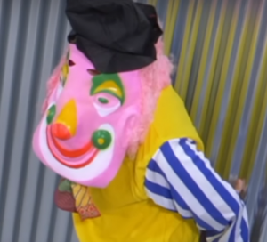
REF-3-043 Clown masqué rose — vue 03 300×272 · Autre prise de vue Rapprochement visuel proposé, photos à comparer côte à côte.
Décision : À examiner 1 carte, choisir une image Conserver plusieurs variantes Séparer en costumes distincts Écarter du set
COST-004 · Oiseau blanc à capuche 3 photo(s) · Références : REF-1-004, REF-2-043, REF-3-005 Même costume : vues différentes REF-1-004 Oiseau blanc à capuche — vue 01 300×461 · Image suggérée comme représentation principale (dimensions) REF-2-043 Oiseau blanc à capuche — vue 02 300×300 · Autre prise de vue REF-3-005 Oiseau blanc à capuche — vue 03 300×271 · Autre prise de vue Rapprochement visuel proposé, photos à comparer côte à côte.
Décision : À examiner 1 carte, choisir une image Conserver plusieurs variantes Séparer en costumes distincts Écarter du set
COST-005 · Héros au casque vert et cape 3 photo(s) · Références : REF-1-005, REF-2-001, REF-3-014 Même costume : vues différentes REF-1-005 Héros au casque vert et cape — vue 01 122×167 · Autre prise de vue 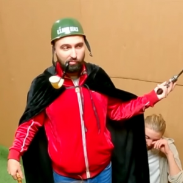
REF-2-001 Héros au casque vert et cape — vue 02 300×300 · Image suggérée comme représentation principale (dimensions) REF-3-014 Héros au casque vert et cape — vue 03 300×265 · Autre prise de vue Rapprochement visuel proposé, photos à comparer côte à côte.
Décision : À examiner 1 carte, choisir une image Conserver plusieurs variantes Séparer en costumes distincts Écarter du set
COST-006 · Casquette noire et moustache orange 2 photo(s) · Références : REF-1-006, REF-3-009 Même costume : vues différentes REF-1-006 Casquette noire et moustache orange — vue 01 124×165 · Autre prise de vue REF-3-009 Casquette noire et moustache orange — vue 02 300×274 · Image suggérée comme représentation principale (dimensions) Rapprochement visuel proposé, photos à comparer côte à côte.
Décision : À examiner 1 carte, choisir une image Conserver plusieurs variantes Séparer en costumes distincts Écarter du set
COST-007 · Créature beige à oreilles rondes 3 photo(s) · Références : REF-1-007, REF-2-005, REF-3-026 Même costume : vues différentes REF-1-007 Créature beige à oreilles rondes — vue 01 121×166 · Autre prise de vue REF-2-005 Créature beige à oreilles rondes — vue 02 300×300 · Image suggérée comme représentation principale (dimensions) REF-3-026 Créature beige à oreilles rondes — vue 03 300×270 · Autre prise de vue Rapprochement visuel proposé, photos à comparer côte à côte.
Décision : À examiner 1 carte, choisir une image Conserver plusieurs variantes Séparer en costumes distincts Écarter du set
COST-008 · Sombrero mexicain 3 photo(s) · Références : REF-1-008, REF-2-004, REF-3-025 Même costume : vues différentes REF-1-008 Sombrero mexicain — vue 01 120×173 · Autre prise de vue REF-2-004 Sombrero mexicain — vue 02 300×300 · Image suggérée comme représentation principale (dimensions) REF-3-025 Sombrero mexicain — vue 03 300×272 · Autre prise de vue Rapprochement visuel proposé, photos à comparer côte à côte.
Décision : À examiner 1 carte, choisir une image Conserver plusieurs variantes Séparer en costumes distincts Écarter du set
COST-009 · Capitaine à moustache orange 3 photo(s) · Références : REF-1-009, REF-2-003, REF-3-024 Même costume : vues différentes REF-1-009 Capitaine à moustache orange — vue 01 120×152 · Autre prise de vue REF-2-003 Capitaine à moustache orange — vue 02 300×300 · Image suggérée comme représentation principale (dimensions) REF-3-024 Capitaine à moustache orange — vue 03 300×282 · Autre prise de vue Rapprochement visuel proposé, photos à comparer côte à côte.
Décision : À examiner 1 carte, choisir une image Conserver plusieurs variantes Séparer en costumes distincts Écarter du set
COST-010 · Cagoule rose 3 photo(s) · Références : REF-1-010, REF-2-002, REF-3-006 Même costume : vues différentes REF-1-010 Cagoule rose — vue 01 124×170 · Autre prise de vue REF-2-002 Cagoule rose — vue 02 300×300 · Image suggérée comme représentation principale (dimensions) REF-3-006 Cagoule rose — vue 03 300×279 · Autre prise de vue Rapprochement visuel proposé, photos à comparer côte à côte.
Décision : À examiner 1 carte, choisir une image Conserver plusieurs variantes Séparer en costumes distincts Écarter du set
COST-011 · Cavalier des neiges 2 photo(s) · Références : REF-1-011, REF-2-006 Même costume : vues différentes REF-1-011 Cavalier des neiges — vue 01 126×159 · Autre prise de vue REF-2-006 Cavalier des neiges — vue 02 300×300 · Image suggérée comme représentation principale (dimensions) Rapprochement visuel proposé, photos à comparer côte à côte.
Décision : À examiner 1 carte, choisir une image Conserver plusieurs variantes Séparer en costumes distincts Écarter du set
COST-012 · Pingouin bleu et blanc 3 photo(s) · Références : REF-1-012, REF-2-011, REF-3-010 Même costume : vues différentes REF-1-012 Pingouin bleu et blanc — vue 01 121×167 · Autre prise de vue REF-2-011 Pingouin bleu et blanc — vue 02 300×300 · Image suggérée comme représentation principale (dimensions) REF-3-010 Pingouin bleu et blanc — vue 03 300×288 · Autre prise de vue Rapprochement visuel proposé, photos à comparer côte à côte.
Décision : À examiner 1 carte, choisir une image Conserver plusieurs variantes Séparer en costumes distincts Écarter du set
COST-013 · Serveur rayé et nœud papillon 3 photo(s) · Références : REF-1-013, REF-2-007, REF-3-012 Même costume : vues différentes REF-1-013 Serveur rayé et nœud papillon — vue 01 119×170 · Autre prise de vue REF-2-007 Serveur rayé et nœud papillon — vue 02 300×300 · Autre prise de vue REF-3-012 Serveur rayé et nœud papillon — vue 03 300×345 · Image suggérée comme représentation principale (dimensions) Rapprochement visuel proposé, photos à comparer côte à côte.
Décision : À examiner 1 carte, choisir une image Conserver plusieurs variantes Séparer en costumes distincts Écarter du set
COST-014 · Poisson gris géant 3 photo(s) · Références : REF-1-014, REF-2-010, REF-3-001 Même costume : vues différentes 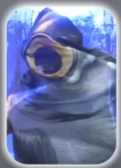
REF-1-014 Poisson gris géant — vue 01 121×168 · Autre prise de vue 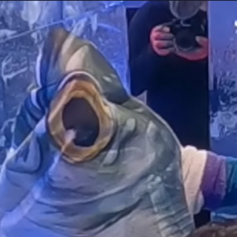
REF-2-010 Poisson gris géant — vue 02 300×300 · Image suggérée comme représentation principale (dimensions) 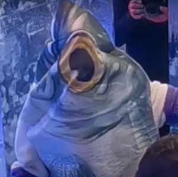
REF-3-001 Poisson gris géant — vue 03 300×298 · Autre prise de vue Rapprochement visuel proposé, photos à comparer côte à côte.
Décision : À examiner 1 carte, choisir une image Conserver plusieurs variantes Séparer en costumes distincts Écarter du set
COST-015 · Poisson-clown orange 3 photo(s) · Références : REF-1-015, REF-2-008, REF-3-030 Même costume : vues différentes REF-1-015 Poisson-clown orange — vue 01 124×166 · Autre prise de vue REF-2-008 Poisson-clown orange — vue 02 300×320 · Image suggérée comme représentation principale (dimensions) REF-3-030 Poisson-clown orange — vue 03 300×281 · Autre prise de vue Rapprochement visuel proposé, photos à comparer côte à côte.
Décision : À examiner 1 carte, choisir une image Conserver plusieurs variantes Séparer en costumes distincts Écarter du set
COST-016 · Roi de glace 3 photo(s) · Références : REF-1-016, REF-2-009, REF-3-031 Même costume : vues différentes REF-1-016 Roi de glace — vue 01 119×166 · Autre prise de vue REF-2-009 Roi de glace — vue 02 300×300 · Image suggérée comme représentation principale (dimensions) 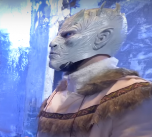
REF-3-031 Roi de glace — vue 03 300×269 · Autre prise de vue Rapprochement visuel proposé, photos à comparer côte à côte.
Décision : À examiner 1 carte, choisir une image Conserver plusieurs variantes Séparer en costumes distincts Écarter du set
COST-017 · Yéti blanc 3 photo(s) · Références : REF-1-017, REF-2-012, REF-3-042 Même costume : vues différentes 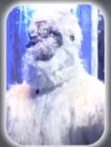
REF-1-017 Yéti blanc — vue 01 124×164 · Autre prise de vue 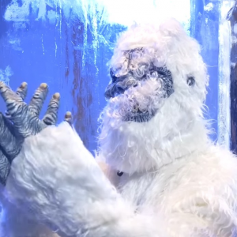
REF-2-012 Yéti blanc — vue 02 300×300 · Image suggérée comme représentation principale (dimensions) 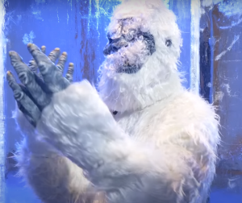
REF-3-042 Yéti blanc — vue 03 300×252 · Autre prise de vue Rapprochement visuel proposé, photos à comparer côte à côte.
Décision : À examiner 1 carte, choisir une image Conserver plusieurs variantes Séparer en costumes distincts Écarter du set
COST-018 · Explorateur safari 2 photo(s) · Références : REF-1-018, REF-2-013 Même costume : vues différentes REF-1-018 Explorateur safari — vue 01 119×170 · Autre prise de vue REF-2-013 Explorateur safari — vue 02 300×300 · Image suggérée comme représentation principale (dimensions) Rapprochement visuel proposé, photos à comparer côte à côte.
Décision : À examiner 1 carte, choisir une image Conserver plusieurs variantes Séparer en costumes distincts Écarter du set
COST-019 · Archer à capuche sombre 3 photo(s) · Références : REF-1-019, REF-2-014, REF-3-034 Même costume : vues différentes REF-1-019 Archer à capuche sombre — vue 01 121×169 · Autre prise de vue REF-2-014 Archer à capuche sombre — vue 02 300×300 · Image suggérée comme représentation principale (dimensions) REF-3-034 Archer à capuche sombre — vue 03 300×294 · Autre prise de vue Rapprochement visuel proposé, photos à comparer côte à côte.
Décision : À examiner 1 carte, choisir une image Conserver plusieurs variantes Séparer en costumes distincts Écarter du set
COST-020 · Animal gris à grandes ailes 3 photo(s) · Références : REF-1-020, REF-2-015, REF-3-008 Même costume : vues différentes REF-1-020 Animal gris à grandes ailes — vue 01 119×166 · Autre prise de vue 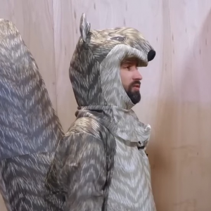
REF-2-015 Animal gris à grandes ailes — vue 02 300×300 · Image suggérée comme représentation principale (dimensions) REF-3-008 Animal gris à grandes ailes — vue 03 300×275 · Autre prise de vue Rapprochement visuel proposé, photos à comparer côte à côte.
Décision : À examiner 1 carte, choisir une image Conserver plusieurs variantes Séparer en costumes distincts Écarter du set
COST-021 · Abeille jaune et noire 3 photo(s) · Références : REF-1-021, REF-2-016, REF-3-016 Même costume : vues différentes 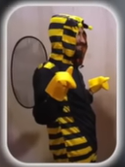
REF-1-021 Abeille jaune et noire — vue 01 125×167 · Autre prise de vue 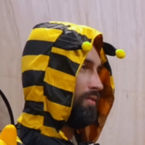
REF-2-016 Abeille jaune et noire — vue 02 300×300 · Image suggérée comme représentation principale (dimensions) 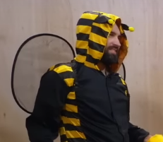
REF-3-016 Abeille jaune et noire — vue 03 231×201 · Autre prise de vue Rapprochement visuel proposé, photos à comparer côte à côte.
Décision : À examiner 1 carte, choisir une image Conserver plusieurs variantes Séparer en costumes distincts Écarter du set
COST-022 · Serpent vert enroulé 3 photo(s) · Références : REF-1-022, REF-2-017, REF-3-015 Même costume : vues différentes REF-1-022 Serpent vert enroulé — vue 01 122×166 · Autre prise de vue REF-2-017 Serpent vert enroulé — vue 02 300×300 · Autre prise de vue REF-3-015 Serpent vert enroulé — vue 03 300×318 · Image suggérée comme représentation principale (dimensions) Rapprochement visuel proposé, photos à comparer côte à côte.
Décision : À examiner 1 carte, choisir une image Conserver plusieurs variantes Séparer en costumes distincts Écarter du set
COST-023 · Lézard vert à crête 3 photo(s) · Références : REF-1-023, REF-2-018, REF-3-023 Même costume : vues différentes REF-1-023 Lézard vert à crête — vue 01 126×164 · Autre prise de vue REF-2-018 Lézard vert à crête — vue 02 300×300 · Image suggérée comme représentation principale (dimensions) REF-3-023 Lézard vert à crête — vue 03 300×281 · Autre prise de vue Rapprochement visuel proposé, photos à comparer côte à côte.
Décision : À examiner 1 carte, choisir une image Conserver plusieurs variantes Séparer en costumes distincts Écarter du set
COST-024 · Militaire au béret rouge 3 photo(s) · Références : REF-1-024, REF-2-019, REF-3-037 Même costume : vues différentes REF-1-024 Militaire au béret rouge — vue 01 122×175 · Autre prise de vue REF-2-019 Militaire au béret rouge — vue 02 300×300 · Image suggérée comme représentation principale (dimensions) REF-3-037 Militaire au béret rouge — vue 03 300×284 · Autre prise de vue Rapprochement visuel proposé, photos à comparer côte à côte.
Décision : À examiner 1 carte, choisir une image Conserver plusieurs variantes Séparer en costumes distincts Écarter du set
COST-025 · Patte géante beige 3 photo(s) · Références : REF-1-025, REF-2-020, REF-3-033 Même costume : vues différentes REF-1-025 Patte géante beige — vue 01 127×172 · Autre prise de vue REF-2-020 Patte géante beige — vue 02 300×300 · Image suggérée comme représentation principale (dimensions) REF-3-033 Patte géante beige — vue 03 300×258 · Autre prise de vue Rapprochement visuel proposé, photos à comparer côte à côte.
Décision : À examiner 1 carte, choisir une image Conserver plusieurs variantes Séparer en costumes distincts Écarter du set
COST-026 · Coussin rouge imprimé 2 photo(s) · Références : REF-1-026, REF-2-021 Même costume : vues différentes REF-1-026 Coussin rouge imprimé — vue 01 119×162 · Autre prise de vue 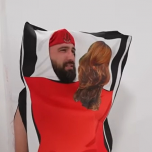
REF-2-021 Coussin rouge imprimé — vue 02 300×300 · Image suggérée comme représentation principale (dimensions) Rapprochement visuel proposé, photos à comparer côte à côte.
Décision : À examiner 1 carte, choisir une image Conserver plusieurs variantes Séparer en costumes distincts Écarter du set
COST-027 · Cheval marron 3 photo(s) · Références : REF-1-027, REF-2-026, REF-3-018 Même costume : vues différentes 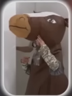
REF-1-027 Cheval marron — vue 01 122×162 · Autre prise de vue 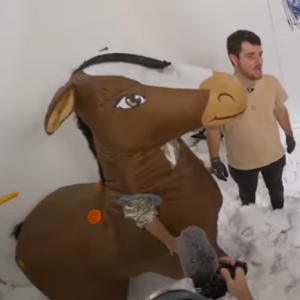
REF-2-026 Cheval marron — vue 02 300×300 · Image suggérée comme représentation principale (dimensions) 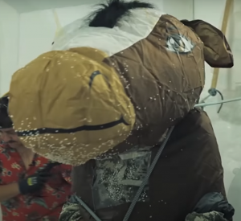
REF-3-018 Cheval marron — vue 03 300×275 · Autre prise de vue Rapprochement visuel proposé, photos à comparer côte à côte.
Décision : À examiner 1 carte, choisir une image Conserver plusieurs variantes Séparer en costumes distincts Écarter du set
COST-028 · Éléphant gris et rose 3 photo(s) · Références : REF-1-028, REF-2-027, REF-3-036 Même costume : vues différentes REF-1-028 Éléphant gris et rose — vue 01 125×164 · Autre prise de vue REF-2-027 Éléphant gris et rose — vue 02 300×300 · Image suggérée comme représentation principale (dimensions) 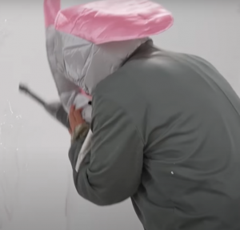
REF-3-036 Éléphant gris et rose — vue 03 300×287 · Autre prise de vue Rapprochement visuel proposé, photos à comparer côte à côte.
Décision : À examiner 1 carte, choisir une image Conserver plusieurs variantes Séparer en costumes distincts Écarter du set
COST-029 · Cow-boy au chapeau brun 3 photo(s) · Références : REF-1-029, REF-2-022, REF-3-041 Même costume : vues différentes REF-1-029 Cow-boy au chapeau brun — vue 01 128×165 · Autre prise de vue REF-2-022 Cow-boy au chapeau brun — vue 02 300×300 · Image suggérée comme représentation principale (dimensions) REF-3-041 Cow-boy au chapeau brun — vue 03 300×282 · Autre prise de vue Rapprochement visuel proposé, photos à comparer côte à côte.
Décision : À examiner 1 carte, choisir une image Conserver plusieurs variantes Séparer en costumes distincts Écarter du set
COST-030 · Bouteille verte 3 photo(s) · Références : REF-1-030, REF-2-023, REF-3-038 Même costume : vues différentes REF-1-030 Bouteille verte — vue 01 116×172 · Autre prise de vue REF-2-023 Bouteille verte — vue 02 300×300 · Image suggérée comme représentation principale (dimensions) 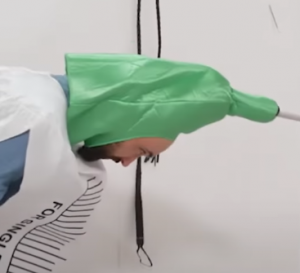
REF-3-038 Bouteille verte — vue 03 300×273 · Autre prise de vue Rapprochement visuel proposé, photos à comparer côte à côte.
Décision : À examiner 1 carte, choisir une image Conserver plusieurs variantes Séparer en costumes distincts Écarter du set
COST-031 · Perruque à franges orange 3 photo(s) · Références : REF-1-031, REF-2-024, REF-3-035 Même costume : vues différentes 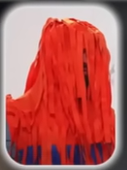
REF-1-031 Perruque à franges orange — vue 01 127×170 · Autre prise de vue 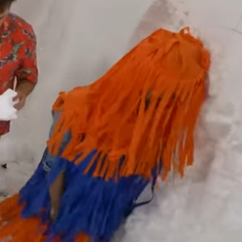
REF-2-024 Perruque à franges orange — vue 02 300×300 · Image suggérée comme représentation principale (dimensions) 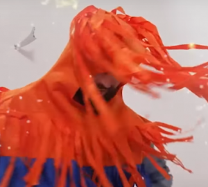
REF-3-035 Perruque à franges orange — vue 03 300×270 · Autre prise de vue Rapprochement visuel proposé, photos à comparer côte à côte.
Décision : À examiner 1 carte, choisir une image Conserver plusieurs variantes Séparer en costumes distincts Écarter du set
COST-032 · Conducteur de scooter jaune 3 photo(s) · Références : REF-1-032, REF-2-025, REF-3-020 Même costume : vues différentes REF-1-032 Conducteur de scooter jaune — vue 01 131×166 · Autre prise de vue 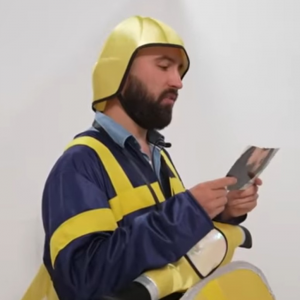
REF-2-025 Conducteur de scooter jaune — vue 02 300×300 · Image suggérée comme représentation principale (dimensions) REF-3-020 Conducteur de scooter jaune — vue 03 300×278 · Autre prise de vue Rapprochement visuel proposé, photos à comparer côte à côte.
Décision : À examiner 1 carte, choisir une image Conserver plusieurs variantes Séparer en costumes distincts Écarter du set
COST-033 · Capuche rouge à visière miroir 2 photo(s) · Références : REF-1-033, REF-2-029 Même costume : vues différentes 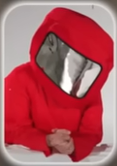
REF-1-033 Capuche rouge à visière miroir — vue 01 117×166 · Autre prise de vue 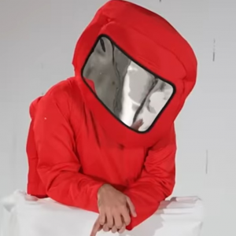
REF-2-029 Capuche rouge à visière miroir — vue 02 300×300 · Image suggérée comme représentation principale (dimensions) Rapprochement visuel proposé, photos à comparer côte à côte.
Décision : À examiner 1 carte, choisir une image Conserver plusieurs variantes Séparer en costumes distincts Écarter du set
COST-034 · Tournesol dans son pot 3 photo(s) · Références : REF-1-034, REF-2-044, REF-3-028 Même costume : vues différentes 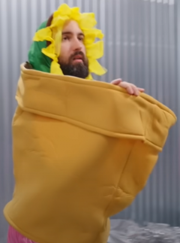
REF-1-034 Tournesol dans son pot — vue 01 300×406 · Image suggérée comme représentation principale (dimensions) REF-2-044 Tournesol dans son pot — vue 02 300×300 · Autre prise de vue REF-3-028 Tournesol dans son pot — vue 03 300×275 · Autre prise de vue Rapprochement visuel proposé, photos à comparer côte à côte.
Décision : À examiner 1 carte, choisir une image Conserver plusieurs variantes Séparer en costumes distincts Écarter du set
COST-035 · Princesse à perruque noire 3 photo(s) · Références : REF-1-035, REF-2-028, REF-3-040 Même costume : vues différentes REF-1-035 Princesse à perruque noire — vue 01 128×170 · Autre prise de vue REF-2-028 Princesse à perruque noire — vue 02 300×300 · Image suggérée comme représentation principale (dimensions) REF-3-040 Princesse à perruque noire — vue 03 300×278 · Autre prise de vue Rapprochement visuel proposé, photos à comparer côte à côte.
Décision : À examiner 1 carte, choisir une image Conserver plusieurs variantes Séparer en costumes distincts Écarter du set
COST-036 · Ouvrier en briques orange 2 photo(s) · Références : REF-1-036, REF-2-030 Même costume : vues différentes REF-1-036 Ouvrier en briques orange — vue 01 126×164 · Autre prise de vue 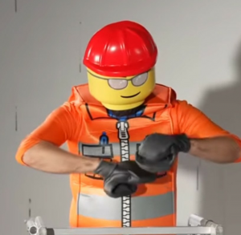
REF-2-030 Ouvrier en briques orange — vue 02 300×293 · Image suggérée comme représentation principale (dimensions) Rapprochement visuel proposé, photos à comparer côte à côte.
Décision : À examiner 1 carte, choisir une image Conserver plusieurs variantes Séparer en costumes distincts Écarter du set
COST-037 · Longue perruque blonde 3 photo(s) · Références : REF-1-037, REF-2-031, REF-3-029 Même costume : vues différentes REF-1-037 Longue perruque blonde — vue 01 118×169 · Autre prise de vue REF-2-031 Longue perruque blonde — vue 02 300×300 · Image suggérée comme représentation principale (dimensions) REF-3-029 Longue perruque blonde — vue 03 300×248 · Autre prise de vue Rapprochement visuel proposé, photos à comparer côte à côte.
Décision : À examiner 1 carte, choisir une image Conserver plusieurs variantes Séparer en costumes distincts Écarter du set
COST-038 · Vieille perruque blanche et dentier 3 photo(s) · Références : REF-1-038, REF-2-034, REF-3-021 Même costume : vues différentes REF-1-038 Vieille perruque blanche et dentier — vue 01 116×165 · Autre prise de vue REF-2-034 Vieille perruque blanche et dentier — vue 02 300×300 · Image suggérée comme représentation principale (dimensions) REF-3-021 Vieille perruque blanche et dentier — vue 03 300×274 · Autre prise de vue Rapprochement visuel proposé, photos à comparer côte à côte.
Décision : À examiner 1 carte, choisir une image Conserver plusieurs variantes Séparer en costumes distincts Écarter du set
COST-039 · Gel hydroalcoolique géant 3 photo(s) · Références : REF-1-039, REF-2-033, REF-3-011 Même costume : vues différentes REF-1-039 Gel hydroalcoolique géant — vue 01 121×165 · Autre prise de vue REF-2-033 Gel hydroalcoolique géant — vue 02 300×300 · Image suggérée comme représentation principale (dimensions) REF-3-011 Gel hydroalcoolique géant — vue 03 300×277 · Autre prise de vue Rapprochement visuel proposé, photos à comparer côte à côte.
Décision : À examiner 1 carte, choisir une image Conserver plusieurs variantes Séparer en costumes distincts Écarter du set
COST-040 · Cône orange de signalisation 3 photo(s) · Références : REF-1-040, REF-2-032, REF-3-039 Même costume : vues différentes REF-1-040 Cône orange de signalisation — vue 01 121×171 · Autre prise de vue REF-2-032 Cône orange de signalisation — vue 02 300×300 · Image suggérée comme représentation principale (dimensions) REF-3-039 Cône orange de signalisation — vue 03 300×290 · Autre prise de vue Rapprochement visuel proposé, photos à comparer côte à côte.
Décision : À examiner 1 carte, choisir une image Conserver plusieurs variantes Séparer en costumes distincts Écarter du set
COST-041 · Squelette sur tee-shirt noir 3 photo(s) · Références : REF-1-041, REF-2-035, REF-3-027 Même costume : vues différentes REF-1-041 Squelette sur tee-shirt noir — vue 01 116×171 · Autre prise de vue 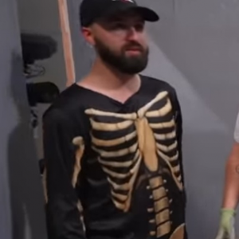
REF-2-035 Squelette sur tee-shirt noir — vue 02 300×300 · Autre prise de vue 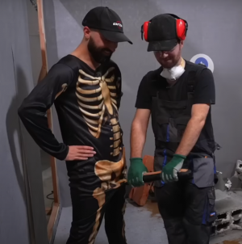
REF-3-027 Squelette sur tee-shirt noir — vue 03 300×302 · Image suggérée comme représentation principale (dimensions) Rapprochement visuel proposé, photos à comparer côte à côte.
Décision : À examiner 1 carte, choisir une image Conserver plusieurs variantes Séparer en costumes distincts Écarter du set
COST-042 · Poupée dans sa boîte rose 3 photo(s) · Références : REF-1-042, REF-2-036, REF-3-002 Même costume : vues différentes REF-1-042 Poupée dans sa boîte rose — vue 01 128×170 · Autre prise de vue 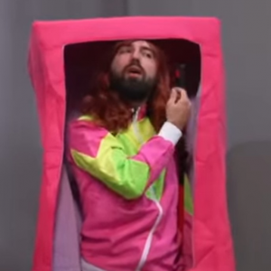
REF-2-036 Poupée dans sa boîte rose — vue 02 300×300 · Image suggérée comme représentation principale (dimensions) REF-3-002 Poupée dans sa boîte rose — vue 03 300×255 · Autre prise de vue Rapprochement visuel proposé, photos à comparer côte à côte.
Décision : À examiner 1 carte, choisir une image Conserver plusieurs variantes Séparer en costumes distincts Écarter du set
COST-043 · Créature verte à yeux globuleux 3 photo(s) · Références : REF-1-043, REF-2-039, REF-3-003 Même costume : vues différentes REF-1-043 Créature verte à yeux globuleux — vue 01 121×169 · Autre prise de vue REF-2-039 Créature verte à yeux globuleux — vue 02 300×300 · Image suggérée comme représentation principale (dimensions) REF-3-003 Créature verte à yeux globuleux — vue 03 300×297 · Autre prise de vue Rapprochement visuel proposé, photos à comparer côte à côte.
Décision : À examiner 1 carte, choisir une image Conserver plusieurs variantes Séparer en costumes distincts Écarter du set
COST-044 · Personnage sans tête en cape noire 3 photo(s) · Références : REF-1-044, REF-2-038, REF-3-022 Même costume : vues différentes REF-1-044 Personnage sans tête en cape noire — vue 01 113×165 · Autre prise de vue 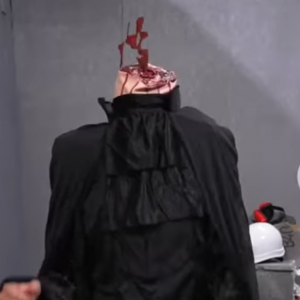
REF-2-038 Personnage sans tête en cape noire — vue 02 300×300 · Image suggérée comme représentation principale (dimensions) REF-3-022 Personnage sans tête en cape noire — vue 03 300×269 · Autre prise de vue Rapprochement visuel proposé, photos à comparer côte à côte.
Décision : À examiner 1 carte, choisir une image Conserver plusieurs variantes Séparer en costumes distincts Écarter du set
COST-045 · Paquet de bonbons Super Bon 3 photo(s) · Références : REF-1-045, REF-2-037, REF-3-004 Même costume : vues différentes REF-1-045 Paquet de bonbons Super Bon — vue 01 120×167 · Autre prise de vue REF-2-037 Paquet de bonbons Super Bon — vue 02 300×300 · Image suggérée comme représentation principale (dimensions) 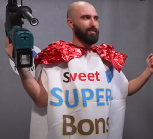
REF-3-004 Paquet de bonbons Super Bon — vue 03 300×274 · Autre prise de vue Rapprochement visuel proposé, photos à comparer côte à côte.
Décision : À examiner 1 carte, choisir une image Conserver plusieurs variantes Séparer en costumes distincts Écarter du set
COST-046 · Homard rouge 3 photo(s) · Références : REF-1-046, REF-2-045, REF-3-032 Même costume : vues différentes REF-1-046 Homard rouge — vue 01 300×346 · Image suggérée comme représentation principale (dimensions) REF-2-045 Homard rouge — vue 02 300×300 · Autre prise de vue 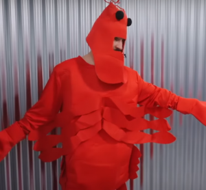
REF-3-032 Homard rouge — vue 03 300×278 · Autre prise de vue Rapprochement visuel proposé, photos à comparer côte à côte.
Décision : À examiner 1 carte, choisir une image Conserver plusieurs variantes Séparer en costumes distincts Écarter du set
COST-047 · Joueur de flûte au bonnet rouge 3 photo(s) · Références : REF-1-047, REF-2-046, REF-3-017 Même costume : vues différentes REF-1-047 Joueur de flûte au bonnet rouge — vue 01 300×457 · Image suggérée comme représentation principale (dimensions) REF-2-046 Joueur de flûte au bonnet rouge — vue 02 300×300 · Autre prise de vue 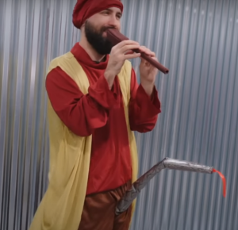
REF-3-017 Joueur de flûte au bonnet rouge — vue 03 300×290 · Autre prise de vue Rapprochement visuel proposé, photos à comparer côte à côte.
Décision : À examiner 1 carte, choisir une image Conserver plusieurs variantes Séparer en costumes distincts Écarter du set
COST-048 · Personnage jaune à haute coiffure bleue 3 photo(s) · Références : REF-1-048, REF-2-047, REF-3-013 Même costume : vues différentes 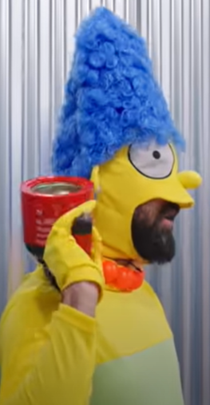
REF-1-048 Personnage jaune à haute coiffure bleue — vue 01 263×507 · Image suggérée comme représentation principale (dimensions) REF-2-047 Personnage jaune à haute coiffure bleue — vue 02 300×300 · Autre prise de vue 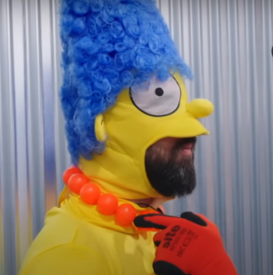
REF-3-013 Personnage jaune à haute coiffure bleue — vue 03 300×303 · Autre prise de vue Rapprochement visuel proposé, photos à comparer côte à côte.
Décision : À examiner 1 carte, choisir une image Conserver plusieurs variantes Séparer en costumes distincts Écarter du set
COST-049 · Baignoire bleue et canard jaune 2 photo(s) · Références : REF-1-049, REF-2-048 Même costume : vues différentes 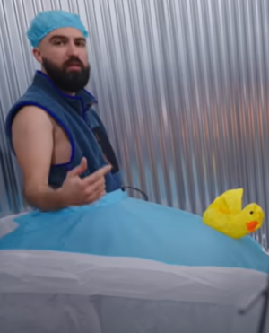
REF-1-049 Baignoire bleue et canard jaune — vue 01 300×371 · Image suggérée comme représentation principale (dimensions) REF-2-048 Baignoire bleue et canard jaune — vue 02 300×300 · Autre prise de vue Rapprochement visuel proposé, photos à comparer côte à côte.
Décision : À examiner 1 carte, choisir une image Conserver plusieurs variantes Séparer en costumes distincts Écarter du set
COST-050 · Officier militaire en uniforme vert 2 photo(s) · Références : REF-1-050, REF-2-049 Même costume : vues différentes REF-1-050 Officier militaire en uniforme vert — vue 01 157×414 · Autre prise de vue REF-2-049 Officier militaire en uniforme vert — vue 02 300×300 · Image suggérée comme représentation principale (dimensions) Rapprochement visuel proposé, photos à comparer côte à côte.
Décision : À examiner 1 carte, choisir une image Conserver plusieurs variantes Séparer en costumes distincts Écarter du set
COST-051 · Pilon de poulet géant 2 photo(s) · Références : REF-1-051, REF-2-062 Même costume : vues différentes REF-1-051 Pilon de poulet géant — vue 01 267×561 · Image suggérée comme représentation principale (dimensions) REF-2-062 Pilon de poulet géant — vue 02 300×300 · Autre prise de vue Rapprochement visuel proposé, photos à comparer côte à côte.
Décision : À examiner 1 carte, choisir une image Conserver plusieurs variantes Séparer en costumes distincts Écarter du set
COST-052 · Toge marron avec col rigide 2 photo(s) · Références : REF-1-052, REF-2-063 Même costume : vues différentes REF-1-052 Toge marron avec col rigide — vue 01 263×479 · Image suggérée comme représentation principale (dimensions) 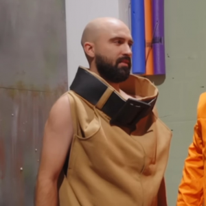
REF-2-063 Toge marron avec col rigide — vue 02 300×300 · Autre prise de vue Rapprochement visuel proposé, photos à comparer côte à côte.
Décision : À examiner 1 carte, choisir une image Conserver plusieurs variantes Séparer en costumes distincts Écarter du set
COST-053 · Four à micro-ondes 2 photo(s) · Références : REF-1-053, REF-2-064 Même costume : vues différentes 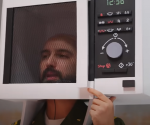
REF-1-053 Four à micro-ondes — vue 01 300×249 · Autre prise de vue 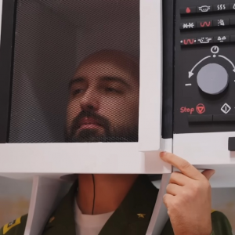
REF-2-064 Four à micro-ondes — vue 02 300×300 · Image suggérée comme représentation principale (dimensions) Rapprochement visuel proposé, photos à comparer côte à côte.
Décision : À examiner 1 carte, choisir une image Conserver plusieurs variantes Séparer en costumes distincts Écarter du set
COST-054 · Costume blanc à capuche jaune 2 photo(s) · Références : REF-1-054, REF-2-065 Même costume : vues différentes REF-1-054 Costume blanc à capuche jaune — vue 01 300×437 · Image suggérée comme représentation principale (dimensions) REF-2-065 Costume blanc à capuche jaune — vue 02 300×300 · Autre prise de vue Rapprochement visuel proposé, photos à comparer côte à côte.
Décision : À examiner 1 carte, choisir une image Conserver plusieurs variantes Séparer en costumes distincts Écarter du set
COST-055 · Casquette de capitaine et maquette 2 photo(s) · Références : REF-1-055, REF-2-066 Même costume : vues différentes REF-1-055 Casquette de capitaine et maquette — vue 01 300×375 · Image suggérée comme représentation principale (dimensions) REF-2-066 Casquette de capitaine et maquette — vue 02 300×300 · Autre prise de vue Rapprochement visuel proposé, photos à comparer côte à côte.
Décision : À examiner 1 carte, choisir une image Conserver plusieurs variantes Séparer en costumes distincts Écarter du set
COST-056 · Cosse de petits pois 2 photo(s) · Références : REF-1-056, REF-2-058 Même costume : vues différentes REF-1-056 Cosse de petits pois — vue 01 185×458 · Autre prise de vue REF-2-058 Cosse de petits pois — vue 02 300×300 · Image suggérée comme représentation principale (dimensions) Rapprochement visuel proposé, photos à comparer côte à côte.
Décision : À examiner 1 carte, choisir une image Conserver plusieurs variantes Séparer en costumes distincts Écarter du set
COST-057 · Jeu Puissance 4 géant 2 photo(s) · Références : REF-1-057, REF-2-059 Même costume : vues différentes 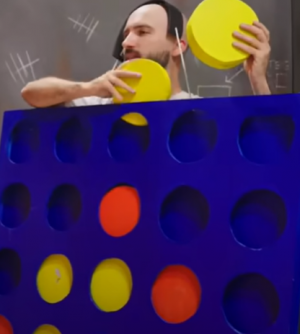
REF-1-057 Jeu Puissance 4 géant — vue 01 300×334 · Image suggérée comme représentation principale (dimensions) REF-2-059 Jeu Puissance 4 géant — vue 02 300×300 · Autre prise de vue Rapprochement visuel proposé, photos à comparer côte à côte.
Décision : À examiner 1 carte, choisir une image Conserver plusieurs variantes Séparer en costumes distincts Écarter du set
COST-058 · Lanceur de projectiles bricolé 2 photo(s) · Références : REF-1-058, REF-2-060 Même costume : vues différentes REF-1-058 Lanceur de projectiles bricolé — vue 01 300×368 · Image suggérée comme représentation principale (dimensions) REF-2-060 Lanceur de projectiles bricolé — vue 02 300×300 · Autre prise de vue Rapprochement visuel proposé, photos à comparer côte à côte.
Décision : À examiner 1 carte, choisir une image Conserver plusieurs variantes Séparer en costumes distincts Écarter du set
COST-059 · Costume métallisé à tête de vache 2 photo(s) · Références : REF-1-059, REF-2-061 Même costume : vues différentes 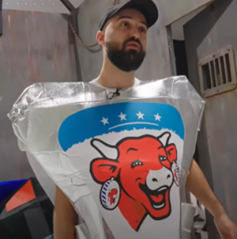
REF-1-059 Costume métallisé à tête de vache — vue 01 300×302 · Image suggérée comme représentation principale (dimensions) REF-2-061 Costume métallisé à tête de vache — vue 02 300×300 · Autre prise de vue Rapprochement visuel proposé, photos à comparer côte à côte.
Décision : À examiner 1 carte, choisir une image Conserver plusieurs variantes Séparer en costumes distincts Écarter du set
COST-060 · Globe terrestre et grandes chaussures 1 photo(s) · Références : REF-1-060 Image isolée REF-1-060 Globe terrestre et grandes chaussures 300×499 · Image suggérée comme représentation principale (dimensions) Décision : À examiner 1 carte, choisir une image Conserver plusieurs variantes Séparer en costumes distincts Écarter du set
COST-061 · Panneau de basket sur le corps 2 photo(s) · Références : REF-1-061, REF-2-051 Même costume : vues différentes 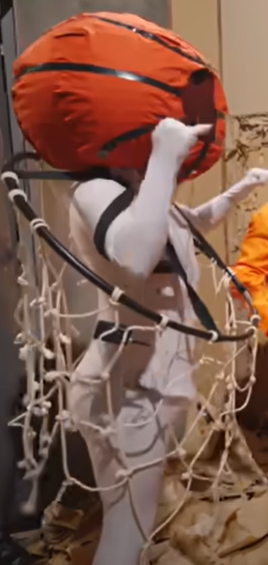
REF-1-061 Panneau de basket sur le corps — vue 01 268×565 · Image suggérée comme représentation principale (dimensions) REF-2-051 Panneau de basket sur le corps — vue 02 300×300 · Autre prise de vue Rapprochement visuel proposé, photos à comparer côte à côte.
Décision : À examiner 1 carte, choisir une image Conserver plusieurs variantes Séparer en costumes distincts Écarter du set
COST-062 · Grand rectangle jaune 2 photo(s) · Références : REF-1-062, REF-2-052 Même costume : vues différentes REF-1-062 Grand rectangle jaune — vue 01 228×412 · Image suggérée comme représentation principale (dimensions) REF-2-052 Grand rectangle jaune — vue 02 300×300 · Autre prise de vue Rapprochement visuel proposé, photos à comparer côte à côte.
Décision : À examiner 1 carte, choisir une image Conserver plusieurs variantes Séparer en costumes distincts Écarter du set
COST-063 · Saucisse orange géante 2 photo(s) · Références : REF-1-063, REF-2-053 Même costume : vues différentes REF-1-063 Saucisse orange géante — vue 01 300×249 · Autre prise de vue REF-2-053 Saucisse orange géante — vue 02 300×300 · Image suggérée comme représentation principale (dimensions) Rapprochement visuel proposé, photos à comparer côte à côte.
Décision : À examiner 1 carte, choisir une image Conserver plusieurs variantes Séparer en costumes distincts Écarter du set
COST-064 · Perruque brune et plateau de service 2 photo(s) · Références : REF-1-064, REF-2-054 Même costume : vues différentes REF-1-064 Perruque brune et plateau de service — vue 01 200×393 · Autre prise de vue REF-2-054 Perruque brune et plateau de service — vue 02 300×300 · Image suggérée comme représentation principale (dimensions) Rapprochement visuel proposé, photos à comparer côte à côte.
Décision : À examiner 1 carte, choisir une image Conserver plusieurs variantes Séparer en costumes distincts Écarter du set
COST-065 · Cuvette de toilettes 2 photo(s) · Références : REF-1-065, REF-2-055 Même costume : vues différentes REF-1-065 Cuvette de toilettes — vue 01 300×445 · Image suggérée comme représentation principale (dimensions) REF-2-055 Cuvette de toilettes — vue 02 300×300 · Autre prise de vue Rapprochement visuel proposé, photos à comparer côte à côte.
Décision : À examiner 1 carte, choisir une image Conserver plusieurs variantes Séparer en costumes distincts Écarter du set
COST-066 · Policier en bleu 2 photo(s) · Références : REF-1-066, REF-2-056 Même costume : vues différentes REF-1-066 Policier en bleu — vue 01 300×463 · Image suggérée comme représentation principale (dimensions) REF-2-056 Policier en bleu — vue 02 300×348 · Autre prise de vue Rapprochement visuel proposé, photos à comparer côte à côte.
Décision : À examiner 1 carte, choisir une image Conserver plusieurs variantes Séparer en costumes distincts Écarter du set
COST-067 · Lettre géante en papier blanc 2 photo(s) · Références : REF-1-067, REF-2-057 Même costume : vues différentes REF-1-067 Lettre géante en papier blanc — vue 01 300×486 · Image suggérée comme représentation principale (dimensions) 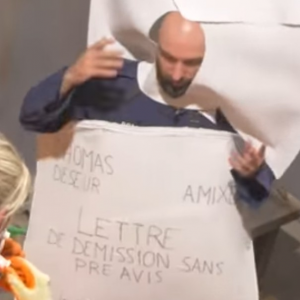
REF-2-057 Lettre géante en papier blanc — vue 02 300×300 · Autre prise de vue Rapprochement visuel proposé, photos à comparer côte à côte.
Décision : À examiner 1 carte, choisir une image Conserver plusieurs variantes Séparer en costumes distincts Écarter du set
COST-068 · Chemise sans manches et cravate verte 1 photo(s) · Références : REF-2-050 À confirmer REF-2-050 Chemise sans manches et cravate verte 300×300 · Image suggérée comme représentation principale (dimensions) Même scène que le personnage « Globe terrestre » ? Costume distinct sur la photo.
Décision : À examiner 1 carte, choisir une image Conserver plusieurs variantes Séparer en costumes distincts Écarter du set
COST-069 · Visage derrière une fente en carton 1 photo(s) · Références : REF-3-019 À confirmer 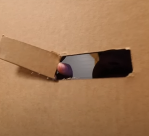
REF-3-019 Visage derrière une fente en carton 300×274 · Image suggérée comme représentation principale (dimensions) Visuel isolé, à confirmer comme carte autonome ou détail d’un autre costume.
Décision : À examiner 1 carte, choisir une image Conserver plusieurs variantes Séparer en costumes distincts Écarter du set
COST-070 · Affiche Braderie de Lille 1 photo(s) · Références : REF-177-LILLE À confirmer 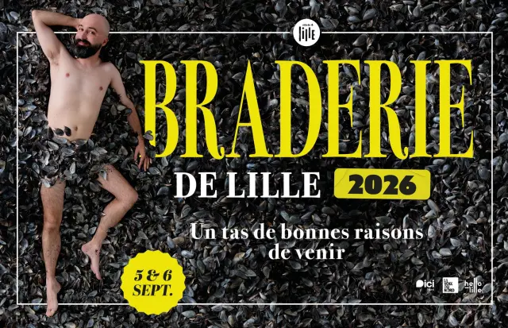
REF-177-LILLE Affiche Braderie de Lille 640×413 · Image suggérée comme représentation principale (dimensions) Affiche événementielle, pas un déguisement ; hors-série à décider.
Décision : À examiner 1 carte, choisir une image Conserver plusieurs variantes Séparer en costumes distincts Écarter du set